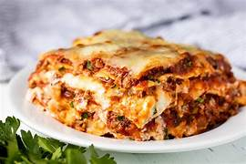

Lasagna
---------------------------------------------------

---------------------------------------------------
How to make it!
Making lasagna can be time-consuming, but the results are well worth the wait.
You'll find a detailed ingredient list and step-by-step instructions in the recipe below, but let's go over the basics:
Ingredients
These are the ingredients you'll need to add to your grocery list:
- Meat
- Onion and garlic
- Sugar: Two tablespoons of white sugar
add subtle sweetness and enhance the flavor of the sauce.
- Spices and seasonings:This lasagna recipe is flavored with fresh parsley,
dried basil leaves, salt, Italian seasoning, fennel seeds, and black pepper.
- Lasagna noodles
- Cheeses:Parmesan, mozzarella, and ricotta cheese make this lasagna extra decadent.
- Egg
Step-by-step
- Make the meat sauce.
- Cook the noodles.
- Make the ricotta mixture.
- Layer the lasagna according to the recipe instructions.
- Cover with foil and bake.
- Let the lasagna rest before serving.
How to layer Lasagna
Meat sauce
Noodles
Ricotta mixture
Mozzarella slices
Meat sauce
Parmesan cheese
Repeat the layers, then top with the remaining Parmesan.
ENJOY